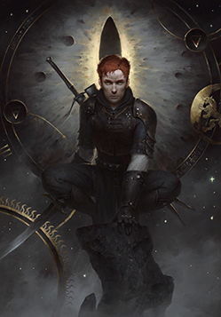
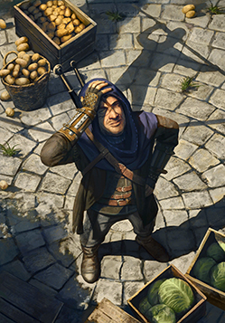

<img src="foto.png" alt="exemplo de foto">
A tag img é usada para inserir imagens na pagina.
Geraz de Leyda.
Aceite um contrato de Aen Seidhe por um dh'oine quando puder, pois há menos probabilidade de levar uma facada nas costelas no lar da moeda.-Geraz
Mentor da escola do gato.
Se você cair, já era. Suas sete vidas acabaram, rapaz.
Adepto da escola do gato.
Os Gatos alunos ajustam o seu equilíbrio andando em uma corda bamba de olhos vendados.
O fracasso é iminente no começo, mas, com o treinamento adequado, as artimanhas ficam mais altas — e perigosas — enquanto eles se aproximam da Provação Final, onde o fracasso não é tão suave.

Os melhores formatos de imagens para web sao o Jpeg e Png.
O ponto forte do formato Jpeg é a maior compactaçao ja o do formato Png é a capacidade de permitir tranparencia.
A tag <PICTURE> permite criar mais de uma origem para uma tag <IMG> podendo assim torna a imagem flexivel a varios formatos de tela.
Aumente e diminua o tamanho do seu navegador.
<Dentro de Head voce deve inserir
<link rel="shortcut icon" href="favicon.ico" type="image/x-icon">
, a melhor forma de fazer é digitar link na area de head e deixar o visual code completar clicando em favicon.
Em href coloque o endereço do favicon.
Voltar a pagina-01